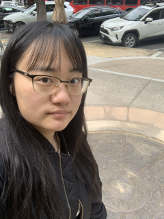

Cindy in front of the Davis Centennial Seal
My favorite part of the seal is how when viewed from its center to its outer rings, it reveals the history and development of Davis. Being able to capture hundreds of years within on seal is a great feat. It was fun recognizing the various elements on the seal such as the farmers market. My favorite part of the seal was the middle which showed the highways of Davis. It was so simple yet nicely encapsulates Davis.